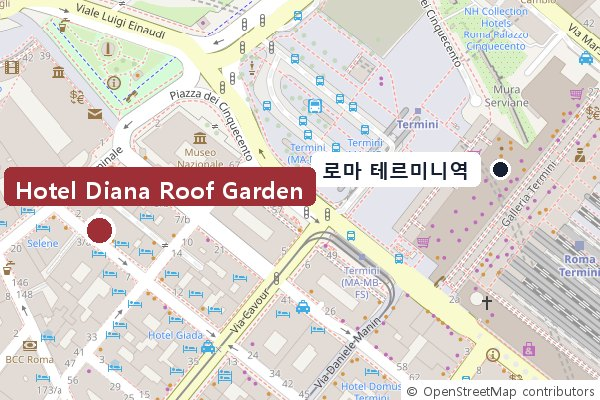

28
인천에서 파리로
- 10:05인천공항 출발, 아시아나 OZ501 (약 14시간 15분)
- 16:25파리 샤를드골 공항 도착
- 도착 후공항 미팅 후 호텔까지 1커플 단독 전용차량 포함
현지인 또는 한국인 기사가 공항에서 맞이합니다. 캐리어는 1인 1개 기준이며, 더 있으면 추가 요금이 붙습니다. - 저녁New Hotel Lafayette 체크인 후 자유 시간
조식 기내식, 중식 기내식, 석식 자유
2026년 12월 28일 ~ 2027년 1월 9일, 11박 13일 신혼여행
오늘 일정 보기현지 사정에 따라 시간이 바뀔 수 있으니, 출발 전 최종 확정서와 티켓을 다시 확인하세요.
| 날짜 | 구간 | 시간 |
|---|---|---|
| 12/28 (월) | 인천 → 파리 샤를드골아시아나 OZ501 직항, 약 14시간 15분 | 10:05 – 16:25 |
| 1/1 (금) | 파리 → 베네치아유럽 내 항공, 1시간 40분 | 14:25 – 16:05 |
| 1/3 (일) | 베네치아 메스트레역 → 피렌체 S.M.N역열차, 약 2시간 | 10:00~10:30대 출발 |
| 1/5 (화) | 피렌체 S.M.N역 → 로마 테르미니역열차, 약 1시간 40분 | 18시대 출발 |
| 1/8 (금) ~ 1/9 (토) | 로마 → 인천아시아나 OZ562 직항 | 22:00 – 다음날 17:35 |
 Google 지도에서 열기
Google 지도에서 열기
 Google 지도에서 열기
Google 지도에서 열기
 Google 지도에서 열기
Google 지도에서 열기

Google 지도에서 열기지도를 누르면 Google 지도에서 길찾기를 할 수 있습니다. 지도 이미지 © OpenStreetMap contributors
체크인 때 보증용 신용카드를 요구할 수 있습니다. 미니바 등 개인 경비 보증 목적이며, 사용하지 않으면 청구되지 않습니다.
포함 상품에 포함된 일정, 개별 직접 이동하거나 따로 준비하는 일정입니다.
1. 몽마르트르 언덕, 사크레쾨르 성당, 오페라 가르니에, 라파예트 백화점, 마들렌 성당
2. 퐁피두 센터, 마레 지구, 보주 광장, 바스티유 광장
3. 앵발리드, 몽마르트르 언덕, 사크레쾨르 성당, 화가들의 거리, 바토라부아, 사랑해 벽
시내: 샹젤리제 거리, 개선문, 트로카데로 광장(에펠탑 전망), 알렉상드르 3세교, 그랑팔레와 쁘띠팔레, 파리 시청, 노트르담 성당, 셰익스피어 앤 컴퍼니, 생미셸 거리
루브르: 박물관 내부를 가이드와 함께 관람
오르세 미술관 + 몽마르트르 투어는 화·목에만 진행돼 이날은 루브르 투어로 진행합니다. 전용차량 투어(최대 2팀)로 바꾸면 1인 20만원이 추가됩니다.
현지 사정에 따라 운행 시간이 바뀔 수 있습니다.
유럽 내 항공은 저비용 항공 기준으로 위탁 수하물이 1인 1개, 15~20kg입니다. 넘으면 추가 요금이 붙습니다.
비가 오면 스냅촬영은 진행되지 않고 환불도 없습니다. 스냅촬영을 원하지 않으면 출발 한 달 전(11/28)까지 여행사에 알려야 합니다.
우피치 미술관은 보통 월요일에 쉽니다. 우피치는 1/5(화) 낮에 다녀오는 것을 권합니다.
1. 스페인 계단, 콘도티 거리, 트레비 분수, 판테온, 베네치아 광장, 비토리오 에마누엘레 2세 기념관
2. 포로 로마노, 콜로세움, 콘스탄티누스 개선문, 대전차 경기장, 진실의 입
1월 6일은 이탈리아 공휴일(주현절)이라 바티칸 박물관이 쉬고, 일부 상점·명소가 단축 운영할 수 있습니다.
바티칸 박물관: 피나코테카, 솔방울 정원, 동물의 방, 팔각 정원, 원형의 방, 이집트관, 피오 클레멘티노관, 뮤즈의 방, 아라찌의 방, 성모 마리아의 방, 그리스 십자가의 방, 촛대의 회랑, 라파엘로의 방, 시스티나 성당, 성 베드로 광장과 대성당, 미켈란젤로의 피에타
로마 시내: 콜로세움과 포로 로마노(외관), 대전차 경기장, 트레비 분수, 스페인 계단
바티칸 박물관이 쉬는 날이면 로마 시내 투어(콜로세움·포로 로마노 내부) 또는 남부 투어(단체)로 바뀝니다. 2027년 휴관일은 최종 확정서에서 확인하세요.
Trip Concierge Service: 여행 중 사고나 항공·열차 문제가 생기면 현지 매니저가 언어를 도와줍니다. 현지 시간 09:00~18:00에 전화나 카카오톡으로 연락하며, 연락처는 최종 확정서에 있습니다.